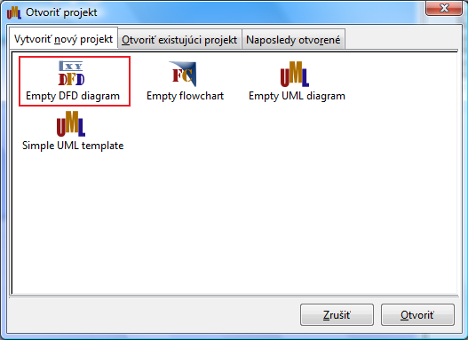
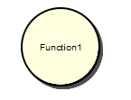
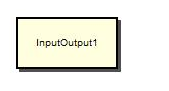
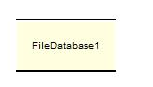
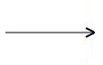

Diagramy toku dát v UML .FRI (Data Flow Diagrams)
Ak chcete používať Diagramy toku dát v UML .FRI, tak na úvodnej obrazovke kliknite na voľbu Vytvoriť nový projekt a zvoľte možnosť "Empty DFD diagram". Po potvrdení tejto voľby sa Vám otvorí nové plátno, na ktoré môžete systémom Drag-n-Drop pridávať jednotlivé elementy.

Entity z oblasti diagramov toku dát, ktoré možno použiť v UML .FRI:
- Funkcia (Function): používa sa aj pomenovanie proces (Process), funkcia transformuje vstupujúci tok dát na výstupný.

- Vstup/výstup (InputOutput): používa sa aj pomenovanie externá entita (External entity), je to entita mimo systému, s ktorou systém komunikuje. Tieto
entity sú zdrojom a cieľom systémových vstupov a výstupov.

- Súborová databáza (FileDatabase): používa sa aj pomenovanie dátový sklad (DataStore) a je miestom uloženia dát v systéme.

Spojenia z oblasti diagramov toku dát, ktoré možno použiť v UML .FRI:
- Čiara toku (FlowLine): používa sa aj pomenovanie tok dát (DataFlow), predstavuje "potrubie", cez ktoré plynie informácia a pomenovanie čiary predstavuje názov danej informácie.
